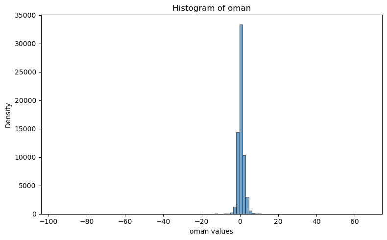

work with GSI diag files#
This notebook illustreate how to work with GSI diag files using a similar obsSpaceGSI class
%%time
# autoload external python modules if they changed
%load_ext autoreload
%autoreload 2
import os, sys
pyDAmonitor_ROOT=os.getenv("pyDAmonitor_ROOT")
if pyDAmonitor_ROOT is None:
print("!!! pyDAmonitor_ROOT is NOT set. Run `source ush/load_pyDAmonitor.sh`")
else:
print(f"pyDAmonitor_ROOT={pyDAmonitor_ROOT}\n")
sys.path.insert(0, pyDAmonitor_ROOT)
# import modules
import warnings
import math
import numpy as np
import uxarray as ux
import xarray as xr
import pandas as pd
import seaborn as sns # seaborn handles NaN values automatically
import matplotlib.pyplot as plt
from netCDF4 import Dataset
from DAmonitor.base import query_dataset, query_data, query_obj, to_dataframe
pyDAmonitor_ROOT=/home/Guoqing.Ge/pyDAmonitor
CPU times: user 3.78 s, sys: 1.81 s, total: 5.6 s
Wall time: 1min 24s
check diag file contents using netCDF4#
diag_ana=f"{pyDAmonitor_ROOT}/data/gsi/diag_conv_t_anl.2024050601.nc4"
diag_bkg=f"{pyDAmonitor_ROOT}/data/gsi/diag_conv_t_ges.2024050601.nc4"
dataset=Dataset(diag_ana, mode='r')
query_dataset(dataset)
Station_ID, Observation_Class, Observation_Type, Observation_Subtype, Latitude, Longitude, Station_Elevation, Pressure, Height, Time, Prep_QC_Mark, Setup_QC_Mark, Prep_Use_Flag, Analysis_Use_Flag, Nonlinear_QC_Rel_Wgt, Errinv_Input, Errinv_Adjust, Errinv_Final, Observation, Obs_Minus_Forecast_adjusted, Obs_Minus_Forecast_unadjusted, Data_Pof, Data_Vertical_Velocity, Bias_Correction_Terms,
check the shape/ndim of each variable in the netCDF4 dataset#
for var in dataset.variables:
print(var, dataset.variables[var][:].shape) #ndim
Station_ID (63565, 8)
Observation_Class (63565, 7)
Observation_Type (63565,)
Observation_Subtype (63565,)
Latitude (63565,)
Longitude (63565,)
Station_Elevation (63565,)
Pressure (63565,)
Height (63565,)
Time (63565,)
Prep_QC_Mark (63565,)
Setup_QC_Mark (63565,)
Prep_Use_Flag (63565,)
Analysis_Use_Flag (63565,)
Nonlinear_QC_Rel_Wgt (63565,)
Errinv_Input (63565,)
Errinv_Adjust (63565,)
Errinv_Final (63565,)
Observation (63565,)
Obs_Minus_Forecast_adjusted (63565,)
Obs_Minus_Forecast_unadjusted (63565,)
Data_Pof (63565,)
Data_Vertical_Velocity (63565,)
Bias_Correction_Terms (63565, 3)
print(dataset.variables["Bias_Correction_Terms"][:])
[[-9.99e+09 -9.99e+09 -9.99e+09]
[-9.99e+09 -9.99e+09 -9.99e+09]
[-9.99e+09 -9.99e+09 -9.99e+09]
...
[-9.99e+09 -9.99e+09 -9.99e+09]
[-9.99e+09 -9.99e+09 -9.99e+09]
[-9.99e+09 -9.99e+09 -9.99e+09]]
check attributes#
for stmp in dataset.variables["Data_Pof"].ncattrs():
print(stmp)
print(dataset.variables["Data_Pof"].ncattrs())
[]
Use obsSpaceGSI to read GSI diag files#
from DAmonitor.obs import obsSpaceGSI, fit_rate
tana=obsSpaceGSI(diag_ana)
tbkg=obsSpaceGSI(diag_bkg)
query_obj(tana)
# one can access diag data using `tana.data`
# query_data(tana.data)
['data', 'dataset', 'filepath']
print(tana.data.Observation_Class)
[' t' ' t' ' t' ... ' t' ' t' ' t']
convert to Pandas DataFrame#
dfana=to_dataframe(tana.data)
dfbkg=to_dataframe(tbkg.data)
pd.set_option("display.max_columns", None)
dfana
| Station_ID | Observation_Class | Observation_Type | Observation_Subtype | Latitude | Longitude | Station_Elevation | Pressure | Height | Time | Prep_QC_Mark | Setup_QC_Mark | Prep_Use_Flag | Analysis_Use_Flag | Nonlinear_QC_Rel_Wgt | Errinv_Input | Errinv_Adjust | Errinv_Final | Observation | Obs_Minus_Forecast_adjusted | Obs_Minus_Forecast_unadjusted | Data_Pof | Data_Vertical_Velocity | Bias_Correction_1 | Bias_Correction_2 | Bias_Correction_3 | |
|---|---|---|---|---|---|---|---|---|---|---|---|---|---|---|---|---|---|---|---|---|---|---|---|---|---|---|
| 0 | AU0330 | t | 131 | 0 | 30.026100 | 236.154800 | 12400.0 | 181.500000 | 12400.0 | -0.91944 | 1.0 | 1.0 | 101.0 | -1.0 | 4.0 | 1.029786 | 1.029786 | 1.029786e+00 | 207.149994 | -1.627310 | -1.627310 | -9.990000e+09 | -9.990000e+09 | -9.990000e+09 | -9.990000e+09 | -9.990000e+09 |
| 1 | AU0330 | t | 131 | 0 | 30.130800 | 236.333405 | 12400.0 | 181.500000 | 12400.0 | -0.89500 | 1.0 | 1.0 | 101.0 | -1.0 | 4.0 | 1.029786 | 1.029786 | 1.029786e+00 | 206.949997 | -1.646028 | -1.646028 | -9.990000e+09 | -9.990000e+09 | -9.990000e+09 | -9.990000e+09 | -9.990000e+09 |
| 2 | AU0330 | t | 131 | 0 | 30.636900 | 237.190308 | 12400.0 | 181.500000 | 12400.0 | -0.77833 | 1.0 | 1.0 | 101.0 | -1.0 | 4.0 | 1.029786 | 1.029786 | 1.029786e+00 | 207.149994 | -0.819473 | -0.819473 | -9.990000e+09 | -9.990000e+09 | -9.990000e+09 | -9.990000e+09 | -9.990000e+09 |
| 3 | XZRFGAZA | t | 133 | 0 | 34.238998 | 236.003998 | 10669.0 | 238.399994 | 10669.0 | -0.70000 | 1.0 | 1.0 | 0.0 | 1.0 | 4.0 | 1.130850 | 1.130850 | 1.130850e+00 | 221.649994 | -0.078072 | -0.078072 | -9.990000e+09 | -9.990000e+09 | -9.990000e+09 | -9.990000e+09 | -9.990000e+09 |
| 4 | XZRFGAZA | t | 133 | 0 | 34.234001 | 235.731003 | 10669.0 | 238.399994 | 10669.0 | -0.66667 | 1.0 | 1.0 | 0.0 | 1.0 | 4.0 | 1.130850 | 1.130850 | 1.130850e+00 | 221.449997 | -0.189546 | -0.189546 | -9.990000e+09 | -9.990000e+09 | -9.990000e+09 | -9.990000e+09 | -9.990000e+09 |
| ... | ... | ... | ... | ... | ... | ... | ... | ... | ... | ... | ... | ... | ... | ... | ... | ... | ... | ... | ... | ... | ... | ... | ... | ... | ... | ... |
| 63560 | F4586 | t | 188 | 0 | 46.589169 | 298.989838 | 47.0 | 1018.400024 | 47.0 | 0.00000 | 2.0 | 1.0 | 101.0 | -1.0 | 4.0 | 0.250000 | 0.250000 | 1.000000e-10 | 282.049988 | 2.429230 | 2.446748 | -9.990000e+09 | -9.990000e+09 | -9.990000e+09 | -9.990000e+09 | -9.990000e+09 |
| 63561 | F9448 | t | 188 | 0 | 46.615002 | 298.967621 | 19.0 | 1021.500000 | 19.0 | 0.00000 | 2.0 | 1.0 | 101.0 | -1.0 | 4.0 | 0.250000 | 0.250000 | 1.000000e-10 | 278.750000 | 0.310210 | -1.171543 | -9.990000e+09 | -9.990000e+09 | -9.990000e+09 | -9.990000e+09 | -9.990000e+09 |
| 63562 | F3942 | t | 188 | 0 | 46.642830 | 298.998322 | 11.0 | 1022.700012 | 11.0 | 0.00000 | 2.0 | 1.0 | 101.0 | -1.0 | 4.0 | 0.250000 | 0.250000 | 1.000000e-10 | 280.950012 | 1.367755 | 0.994733 | -9.990000e+09 | -9.990000e+09 | -9.990000e+09 | -9.990000e+09 | -9.990000e+09 |
| 63563 | G0274 | t | 188 | 0 | 46.645828 | 299.047485 | 10.0 | 1022.700012 | 10.0 | 0.00000 | 2.0 | 1.0 | 101.0 | -1.0 | 4.0 | 0.250000 | 0.250000 | 1.000000e-10 | 282.049988 | 2.479401 | 2.336636 | -9.990000e+09 | -9.990000e+09 | -9.990000e+09 | -9.990000e+09 | -9.990000e+09 |
| 63564 | F2780 | t | 188 | 0 | 46.824669 | 299.187317 | 42.0 | 1019.000000 | 42.0 | 0.00000 | 2.0 | 1.0 | 101.0 | -1.0 | 4.0 | 0.250000 | 0.250000 | 1.000000e-10 | 280.950012 | 2.195708 | 0.297975 | -9.990000e+09 | -9.990000e+09 | -9.990000e+09 | -9.990000e+09 | -9.990000e+09 |
63565 rows × 26 columns
Plot histrogram#
plt.figure(figsize=(8, 5))
#sns.histplot(df["oman"], bins=50, kde=True, color="steelblue")
sns.histplot(tana.data.Obs_Minus_Forecast_adjusted, bins=100, kde=False, color="steelblue")
plt.title("Histogram of oman")
plt.xlabel("oman values")
plt.ylabel("Density")
plt.tight_layout()
plt.show()

Plot fitting rate#
## assemble 133 OMB and OMA into a dictionary
df_133_a = dfana[dfana["Observation_Type"] == 133]
df_133_b = dfbkg[dfbkg["Observation_Type"] == 133]
t133={
'oman': df_133_a["Obs_Minus_Forecast_adjusted"].to_numpy(),
'ombg': df_133_b["Obs_Minus_Forecast_adjusted"].to_numpy(),
'height': df_133_a["Station_Elevation"].to_numpy(),
}
dz = 1000
grouped = fit_rate(t133, dz=dz)
# 5. Plot vertical profile of fit_rate vs height
plt.figure(figsize=(7, 6))
plt.plot(grouped["fit_rate"], grouped["height_bin"], marker="o", color="blue")
# plt.axvline(x=0, color="gray", linestyle="--") # ax vertical line
plt.xlabel("Fit Rate (%)") # label change
plt.gca().xaxis.set_major_formatter(plt.FuncFormatter(lambda x, _: f'{x*100:.0f}%')) # format as %
plt.ylabel("Height Bin (m)")
plt.title("Vertical Profile of Fit Rate")
# Fine-tune ticks
plt.xticks(np.arange(0, 0.25, 0.05)) #, fontsize=12)
plt.yticks(np.arange(0, 13000, dz)) #, , fontsize=12)
# Add minor ticks
from matplotlib.ticker import AutoMinorLocator
plt.gca().xaxis.set_minor_locator(AutoMinorLocator())
plt.gca().yaxis.set_minor_locator(AutoMinorLocator())
# plt.grid(which='both', linestyle='--', linewidth=0.5)
plt.grid(True)
plt.ylim(0, 13000) # set y-axis from 0 (bottom) to 13,000 (top)
plt.tight_layout()
plt.show()
OMA: bias=0.0242 rms=1.2549
OMB: bias=0.2107 rms=1.4361
Overall fit_rate: 12.6145%
0, -1000, 1.2516, 1.7449, 28.2731%
1, 0, 1.6060, 1.8412, 12.7736%
2, 1000, 0.8703, 1.1811, 26.3083%
3, 2000, 0.7375, 1.0638, 30.6658%
4, 3000, 0.7399, 0.9380, 21.1196%
5, 4000, 0.7347, 0.9778, 24.8696%
6, 5000, 1.2334, 1.5148, 18.5773%
7, 6000, 1.4749, 1.6529, 10.7703%
8, 7000, 1.7494, 1.8635, 6.1250%
9, 8000, 1.5833, 1.6431, 3.6373%
10, 9000, 0.6370, 0.7869, 19.0587%
11, 10000, 1.7016, 1.7773, 4.2578%
12, 11000, 0.7794, 0.9396, 17.0520%
13, 12000, 1.0761, 1.5041, 28.4568%